ZEPRS Documentation Book
Documentation specific to the ZEPRS implementation of Zcore
This book contains documentation specific to the ZEPRS implementation of Zcore. For an overview of Zcore, the platform on which ZEPRS is built, please refer to the Zcore Documentation Book .
Basic Concepts
Basic Concepts section
How to use ZEPRS for patient care
Please note: ZEPRS has grown alot since this document was written in 11/8/2005; however, the basic ideas still hold.
Overview
The ZEPRS system is pretty easy to use – the system
feeds you all of the forms you need to fill out. Usually, if it stops
feeding you forms, you’re done w/ your session on ZEPRS.
Here are the main things you would need to know:
-
Login to the system, search for your patient. Click link to begin working with your patient.
-
Usually the system will load the correct form. If you need to do something else, the navigation is easy to understand:
-
The Home link lets you find another patient.
-
The second section of links are for the forms you use during most patient visits. They correspond to the phases of pregnancy.
-
The third section of links provide forms for
ancillary information about the patient, like demographics, patient
history, labs, etc. If your patient is at UTH, you can check her status
from this section as well.
-
If the patient has any infants, you may click the links to the infant record in the next section.
-
When you’re done with your shift, please click the last link – logout.
After a form is submitted, the ZEPRS system checks
the data to see if it should alert the clinician of any issues, suggest
a referral to UTH, or inform you what forms need to be filled out next
(Missing forms). The ZEPRS system presents a small task list (or to-do
list) to the right of every form that displays these alerts. If you
click on one of these links, you are taken to the Problem list, where
you can comment on the problem, mark the problem as inactive, or view
the record that triggered the problem.
Conclusion
The ZEPRS application follows the three main phases
of pregnancy: Antepartum, Labour, and Postnatal. Just as the fetus lets
the mother know when she’s ready to be born, so does the ZEPRS system
help pace you through the system. If you keep this concept in mind,
you’ll be able to work confidently with this system!
Delivery/Postnatal Care
The delivery Summary form has two parts. First, you
need to identify the newborns in the section at the top of the page
dedicated to that task. Next, you provide any other delivery summary
information in the section below.
After you submit the delivery summary form, the system will feed you a series of forms that lead to discharging the mother:
If there were any problems during the course of delivery, the system will feed you a Postnatal Infant or Maternal Visit form.
After the Maternal Discharge Summary is submitted,
the system sends you to the Delivery Summary task list, which indicates
that you’re done.
If the next visit for this patient is a typical
postnatal visit, fill out a Postnatal Maternal visit form, as well as a
Postnatal Infant form. Here’s how you access these forms:
-
Postnatal Maternal visit form: click “Delivery/Postnatal” link on side nav, and select this form.
-
Postnatal Infant form: click the link to the infant
on the left nav strip, and then click “Delivery/Postnatal” link on side
nav, and select this form.
Most of the forms you’ll need during postnatal care
are available from the “Delivery/Postnatal” link on the left nav. Just
keep in mind that if you need to submit a form for the infant, be sure
to click the link to the infant from the left nav, if you’re currently
viewing the mother. Of course, you may also click the link to the
infant from the home page if it’s displayed in the search results.
Labour
If the patient is in Labour, click the link to Problem/Labour Visits.
Submit the form, keeping in mind that if dilatation entered in this
form is less than 4, the system will display the Observations for
Latent phase form. If dilatation is greater, it will bring you to the
partograph, which is very similar to the partogrpah in the blue book.
Instead of marking the bluebook with a pen, simply click on the chart
to make an entry.
Once the patient has delivered, click the link at
the bottom of the page (Patient has delivered.) This will send you to
the Delivery Summary form
Patient workflow in a clinic: the need for a network
The need for a network within a clinic is demonstrated by the
folllowing quote from Dr. Perry Killam, who is managing the ZEPRS
deployment in Lusaka:
"Typically a patient might have her record documented on by several
computers within the clinic. The clerk might use a different computer
than the midwife. The computer that prints the antenatal card may be
different from the one used to fill in her labs. So, I think that the
computers within the MCH clinic need to have real time updating."
Patients generally do not go from MCH to LW; however, "if the MCH
printer isn't working, they might go to Labor Ward to print the
antenatal card and vice versa for the LW."
How do I fill out a form?
The forms in ZEPRS are not too different from the
forms in the referral application. Some of the forms have “collapsing
sections” which means you need to click on the section name to see the
fields to fill out. These sections have a plus sign in front of them.
If you select “Other” in a dropdown, another field may appear that
displays a text entry box. You do not need to fill out all of the
fields on a form. We designed the ZEPRS system with collapsing section
so that if a section is not applicable to your current exam, you may
skip it. Enter only the information you deem clinically appropriate.
Click the “Submit” button at the bottom of the form to save the data.
(Some forms may use different wording, but they all do the same thing –
they save the data you’ve entered and send you to the next form.)
Some of the forms work a little differently. The
Newborn Evaluation form is generated automatically by the system during
the delivery summary process. When you review and make entries on the
Newborn Evaluation form, you must double-click on each field to enter
data. When you see a form that behaves in this manner, you are in
“Edit” mode. But this does not need to be confusing if you keep these
two points in mind:
-
If there are no input widgets on the page, double-click to make them appear.
-
If there are widgets on the page, fill out the form as normal.
How do I make a referral?
Referrals are built into the ZEPRS application –
each form has an option in Disposition for “Refer to UTH”. Select that
option if you need to make a referral. Done!
What is the usual process for using the ZEPRS system?
If it’s the patient’s first visit, you’ll need to
fill out the New Patient form is she’s not available from the Search.
After you submit this form, the system will feed you a series of forms,
one after another, which are used to gather patient history. There are
similar to the forms you fill out in the Blue book:
Once you’re done with these forms, you may begin your typical exams:
At this point, you’re done for this session.
Subsequent Visits
The next time you open this patient’s record, the
system will automatically display the Routine Antenatal Chart. After
you complete your entry in that chart, the system sends you to the Safe
motherhood section. Update any Safe motherhood info (labs, drugs
dispensed) and you’re done.
Unscheduled Visits
If the patient has made an unscheduled visit, click the link to “Problem/Labour Visits.”
Pregnancies
The concept of pregnancy is central to the ZEPRS application -
it affects how the patient record is viewed, because the clinician is
usually interested in records relating to a particular pregnancy
(usually the current one). Most persistence operations should keep this
in mind. For example, if you are doing a search for values to populate
the patient chart, make sure you’re filtering by the correct pregnancy.
Even though the patient is currently pregnant, the user may be viewing
records from a previous pregnancy.
Since women can have multiple pregnancies, there is a Pregnancy
object to track these situations. Each EncounterRecord (metadata for
each form), outcome, and problem has a pregnancy property. Whenever a
form is submitted, the patient’s current pregnancy is persisted in the
encounters table, in PatientStatusRecord (patient_status, as
current_pregnancy_id). If there is not a pregnancy object for a mother
when a form is submitted, a new instance is persisted and linked via
patientStatusReport. datePregnancyBegin is set to the
encounter.getDateVisit(); however, it would be better to use LMP or
similar.
When an encounter is edited, it does not matter if the pregnancy has
ended - don’t mistakenly create a new pregnancy. In fact, we’re not
even checking getPatientStatusreport().getCurrentPregnancy() for
EncounterCorrections.
Need to check getPatientStatusreport().getCurrentPregnancy() for
every new form submission, because it is not certain which will the
first form used when starting a new pregnancy. This avoids hard-coding
form id's into the system.
Do not assume that all patients are pregnant - a child of a patient cannot be pregnant (at least for the next 10-13 years).
The following forms are updated from pregnancy-to-pregnancy:
- Demographics (patient registration)
- Previous Pregnancy
- This chart lists all non-ZEPRS pregnancies as well as ZEPRS pregnancies.
- Medical/Surgical History
- Current Medicine
- SMC
Navigating Pregnancies
Use the previous pregnancies form to navigate ZEPRS pregnancies.
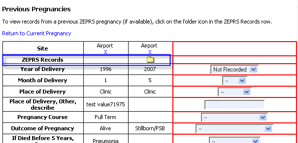
If the patient returns with a new pregnancy and still has an open pregnancy, click "Close" link:

Test Cases:
- Close current pregnancy. Open patient, view Preg. Dating form. Click hist/dating, choose Prev. pregs. Now it displays "Return to current pregnancy" along w/ list of prev. pregs. If you click "Return to current preg." it displays Preg. Dating form, since you have not yet begun Preg. Dating for this new pregnancy. Submission of this form "begins" each new pregnancy.
- Now, click one of the prev. pregs To get back to the new preg click "Return to current preg" link.
- Create patient (submit Registration form) without submitting Pregnancy Dating form.
Pregnancy Conclusion
The form "Pregnancy Conclusion" is used to terminate a pregnancy
and persist values for the pregnancy end date and comments. These
values are persisted by FormDAO whenever form71 is submitted. The field
id’s are hardcoded, so be careful.
PatientStatus has a currentPregnancy attribute for each patient. The following objects have pregnancy attributes:
- EncounterData (encounter table)
- Problem
- Comments
When a patient is loaded (after clicking link to patient) the
current pregnancy is loaded into the session by PatientRecordAction. If
the "pregnancy" key is sent in the request, that particular pregnancy
is loaded into the session. If the current pregnancy is complete (if
patient.getPatientStatusreport().getCurrentPregnancy().getDatePregnancyEnd()
!= null), then the zeprs session object "pregnancy" is set to a new
instance of an empty pregnancy object by PatientHomeAction. This forces
the interface to reduce the link options on the left nav, provide the
form to create a new pregnancy (Pregnancy Dating), and a link to
History. Within the History section user may peruse Previous
Pregnancies form to navigate other pregnancies that are in the ZEPRS
system.
If you want to check if the pregnancy loaded into the session is active, try this:
<c:when test=\"${empty zeprs_session.datePregnancyEnd}\">
This is used to prevent any form entry when viewing a previous pregnancy.
If you are viewing a previous pregnancy, you may not create new problems; however, you may comment on a problem.
In the ZEPRS app, submitting the Newborn Evaluation form (form23)
creates a new patient, with the parent_id of the current patient loaded
in the session. This is done via DWR - there’s a small subform on the
top of the Delivery Summary page that is used to create a newborn. This
calls the remote class Newborn. PatientRecordUtils.createNewborn
handles the db persistence.
Links to mother/children are in the Previous Pregnancies chart.
The form "Newborn Evaluation" creates a new patient (the infant) in
the system. The application sets the Pregnancy of the infant equal to
the mother’s pregnancy in FormDAO:
infant.getPatientStatusreport().setCurrentPregnancy(mothersCurrentPregnancy);
Flow
As mentioned in the overview, ZEPRS guides the clinician through
the patient care process by feeding the most appropriate form after
each form submission, depending on the data entered. The forms provided
to the user correspond roughly to the phase of pregnancy the user is
in:
- History (generally, forms used to collect patient history are filled out on the first visit)
- Antepartum - Routine antenatal visits
- Safe motherhood - during the antepartum flow, the system always
sends user to the main Safe Motherhood form, to make sure that that
care is given. Within the Safe Motherhood section there are links to SM
care-related forms such as ARV Regimen, Labs, and Drugs.
- Intrapartum (Labour) - problem visits leading up to labour and partograph
- Delivery Summary/Postnatal - Delivery summary, problem visits, and disposition
There are a few more flows used in the ZEPRS system to
collect data, but they are not part of the usual flow process. In other
words, the user has to click on them to reach them - they are not
automatically served by the system.
- Ultrasound
- UTH Admissions
- NICU - infant forms used in UTH NICU postnatal care.
Sometimes the application deviates slightly from the flow.
For example, if the patient has marked "Patient is on ARV's", the ARV
Regimen form is presented. When the ARV Regimen page is submitted, the
application continues on its normal path. The system used to have an
automated flow system, which worked fine when requirements were simple.
Unfortunately, the app has gotten a lot more complicated; therefore,
flows from form-to-form are hard-coded in FormAction (createForward)
and ForwardAction. Ideally, the app will send user to another form;
however, sometimes the app can only send the user to a task list from
which the user much choose the correct form. The application stores the
current form (and flow) in patient_status table. When the user loads a
patient, the app uses the value of the current flow id to determine
what form to provide the user. This process is defined in
PatientHomeAction. In general, the main values that determine changes
to flow are:
- Disposition - admit to active labour, for example
- Cervix Dilatation >=4
- Problem field checked
- Patient is on ARV's checked
The doc Rules for Flows
details a few of the flows. Be sure to check FormAction.createForward
to see if any of these have been revised. Also, these flows are
collected in the Visio - Updated Site Map.vsd.
Fixing flow problems
Sometimes a clinician accidentally submits a delivery summary
form. Submitting the delivery summary form sets the user flow to
Delivery Summary/Postnatal (id=4). there is not an automated way to
"reset" a patient flow. Best way out of this situation is to do the
following:
Delete the incorrect encounter, such as Delivery Summary.
Open up mysql.
Get the patient id:
select * from patient where district_patient_id = 'xxx'\G;
The get a list of the encounter id's
select id, form_id, created from encounter where patient_id=xxx order by id;
Get the patient status
select * from patient_status where id = xxx\G;
Then update the patient_status with the most recent legitamate
encounter. In the following example, the patient is in antenatal flow
(id=1):
update patient_status set current_flow=1, current_flow_encounter_id=xxx where id = xxx
New Patient Flow
ZEPRS provides a wizard-style series of forms when processing a
patient through the intial visit. The most appropriate form is
presented after each form submission. Forms are presented in the
following order:
- Patient Registration and Identification
- Pregnancy Dating
- Previous Pregnancies - can add additional pregnancies. Click Done to proceed to next form.
- Medical/Surgical History - clicking "Currently Taking medicine" will take user to Current Medicine page
- Current Medicine (only if Currently Taking medicine" clicked in Medical/Surgical History)
- Routine Antenatal Visits - click "Problem?" takes to Problem or Labour visit page
- Initial Visit Physical Exam - This form is submitted only *once*for
a patient. A new Initial Visit Physical Exam is not submitted with each
new pregnancy.
- Safe Motherhood Care
Rules for Flows
Some of the rules for flow processing follow, to give you an idea of some of the more complex flows.
Antenatal flow
The most important value collected in Antepartum is the
EGA; several forms throughout the ZEPRs application depend on this
value; therefore, the app collects this value in the Pregnancy Dating
form ASAP.
Problem or labour visit form:
- if "Referral" selected in disposition, create referral problem and send to problem or labour task list
- if "Admit to uth" selected in disposition, create referral (admit) problem and send to problem or labour task list
- Next, the logic gets short-circuited if >= 4 - Send to partograph, no matter what is chosen
- if "admit for active labour field" selected in disposition, check cervixDilatation field.
- if >= 4 - send to partograph - this would have already been done, as per short-circuit rule above.
- if < 4, send to labourObservations
- if "Admit for Observations" selected in disposition, check cervixDilatation field.
- if >= 4 - send to partograph - this would have already been done, as per short-circuit rule above.
- if < 4, send to labourObservations
- if "Discharge to home" selected
- if initial visit physical exam has been submitted, send user to routine antenatal chart
- else send to initial visit physical exam
- if no value for disposition,
- if initial visit physical exam has been submitted, send user to routine antenatal chart
- else send to initial visit physical exam
Labour observations form:
- if "Referral" selected in disposition, create referral problem and send to problem or labour task list
- Next, the logic gets short-circuited if >= 4 - Send to partograph, no matter what is chosen for disposition
- if "Discharge to home" selected, send to problem or labour task list
- if "Admit for active labour (Begin Partograph)" selected
- if >= 4 - send to partograph - this would have already been done, as per short-circuit rule above.
- if < 4, send back to labourObservations
- If "Continue observations" selected, send back to labourObservations
- If nothing selected, send back to labourObservations. This used to
send user back to "Problem or labour" task list, but I think it makes
more sense to keep user in labourObservations form if they don't
dispose.
Postnatal flow
Delivery summary form -> newborn eval.
(Please note that only the mother can post a Delivery Summary form.
Somehow two patient records (out of 35,000) for infants also have
Delivery Summary forms submitted. The normal system flow prevents this
from happening, but even if the user tries to play with the URL, the
system prevents this such an action. See error handling code in
zeprs.js: fillForm function, Newborn.createNewborn, FormDisplayAction,
and FormAction. )
Newborn eval: when completed is clicked, ForwardAction checks values
for "Alive/Stillbirth" and "Patient received ARV’s." and routes
accordingly. If there are multiple fetuses delivered, we keep track of
each newborn eval submitted in SessionPatient.setNewbornEvalsCompleted.
Discharge (similar to newborn eval) :in case of multiple fetuses, stores list of newborns that have already had discharges.
Patient Death
The following forms set the patient's status as "dead:"
- Maternal Death - Disposition field
- Postnatal Infant Visit - Infant status field
- Infant Problem/Postnatal Visit - Infant status field
This status is reflected in the patient search "Dead?" column and is stored in the "dead" field in the patient table.
ARV care
ARV data entry is provided in the Safe Motherhood
section. Some of this data is summarised in the Antenatal and Postnatal
cards, which are linked from the Demographics page. The HIV status and
ARV information is coded:
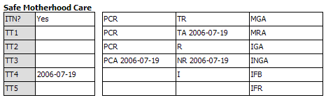
Abbreviations:
- PCR: Pretest Counseled Refused
- PCA: Pretest Counseled Accepted
- TA: Test Refused
- TA: Test Accepted
- NR: Not Reactive (Patient is HIV -)
- R: Reactive (Patient is HIV+)
- I: Indeterminate
- MGA: Mother Given ARV
- IGA: Infant Given ARV
- MRA: Mother refused ARV
- INGA: Infant Not Given ARV
- IFB: Infant feeding choice by mother is Breast Feeding
- IFR: Infant feeding choice by mother is Replacement Feeding
- TT: Tetanus Toxoid Vaccination
- ITN: Sleeps under Insecticide-treated net
ZEPRS provides several reports that may be used for ARV care; for example, the Eligible for ARV's report may be used to help manage eligble patients. See the Reports section for other ARV related reports.
Newborn ARV care
The Newborn Evaluation and Infant Discharge Summary forms provide an opportunity to enter data relating to newborn ARV care in the Infant Immunizations and Medication section:
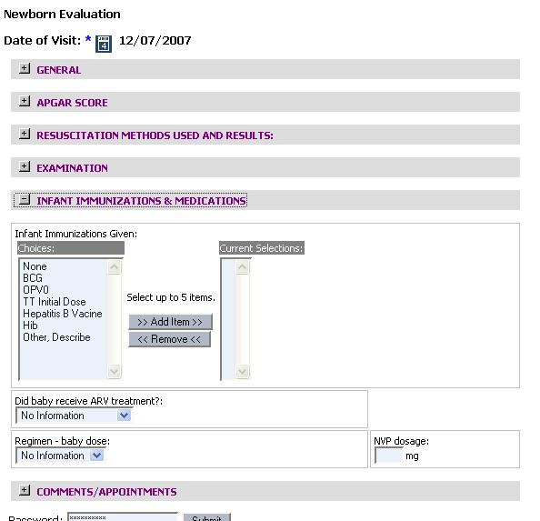
----
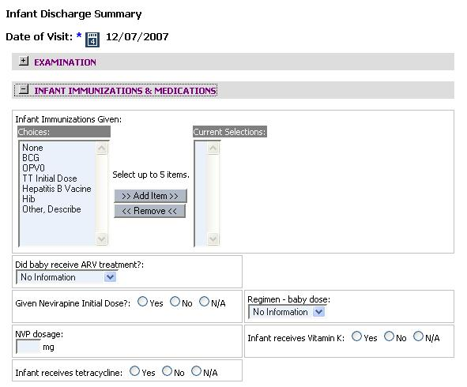
The system will notify the clinician if NVP has not been administered to the newborn if the mother is HIV positive.
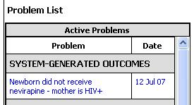
There are additional opportunities to enter HIV care records in the Infant Postnatal Visit form.
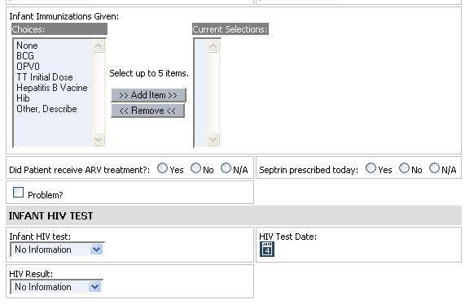
Improving Perinatal Care
The Zambia Electronic Perinatal Record System (ZEPRS) is being used by clinics and the University Teaching Hospital in Lusaka, Zambia to improve patient care.
In Zambia in 2000 an estimated 750 out of every 100,000 mothers died in childbirth, while neonatal mortality was estimated at a rate of 40 in every 1,000 live births (WHO 2000). A women's lifetime risk of death in pregnancy was an estimated 1 in 25. Nearly 1/3 of pregnant women in Lusaka infected with HIV (Joint UAB-Zambian studies). Nearly half of these mothers would transmit HIV to their babies. (Joint UAB-Zambian studies). Virtually all modern health care for more than 1 million people was provided by 23 clinics and the University Teaching Hospital (UTH). All medical records were maintained on paper.
In early 2001 a team of physicians at the University of Alabama at Birmingham (UAB) and visiting Zambian physician Dr. Moses Sinkala conceived the idea based on a successful electronic perinatal record system that the UAB had developed and proven in clinics in Birmingham. In July 2001 the Bill & Melinda Gates Foundation awarded a grant to the UAB to develop a similar system to serve public obstetric clinics in Lusaka, Zambia.
The UAB team solicited proposals for the technical design and implementation of the system from several private sector information technology firms, including Electronic Data Systems, before awarding a contract to RTI. Other project partners included the Center for Infectious Disease Research in Zambia (CIDRZ ) and the Lusaka District Health Management Team of the Zambian Central Board of Health.
Solution
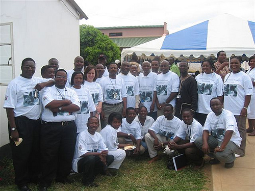The Zambia Electronic Perinatal Record System (ZEPRS) is an Electronic Medical Record (EMR) system used by public obstetric clinics and a hospital (the University Teaching Hospital) in Lusaka, Zambia to improve patient care. The University of Alabama Birmingham (UAB) Center for Research in Women's Health (CRWH ), RTI, and the Center for Infectious Disease Research in Zambia (CIDRZ) developed ZEPRS with local medical expertise and project engagement from the Lusaka Urban Health District, Central Board of Health and funding support from the Bill & Melinda Gates Foundation .
ZEPRS has been designed to improve maternal and perinatal outcomes by:
- Improving perinatal care to women and postnatal care to neonates by:
- Promoting adherence to good standard of care practices
Identifying and document potential medical/ - obstetrical problems so that effective therapies can be administered
- Improving communication and referrals among providers
- Enhancing monitoring and evaluation of outcomes, clinics, and providers
- Improving efficiency, completeness, accuracy of documentation and reporting
How is ZEPRS Being Used?
ZEPRS, an electronic-first medical records and referral system, is one of the first of its kind in sub-Saharan Africa. ZEPRS is helping medical personnel to improve care, combat the spread of HIV/AIDS, and manage records for perinatal patients and infants (antenatal through 6 weeks after delivery) in clinics, the UTH, the Lusaka District Health Management Team, and the Ministry of Health.
ZEPRS operates over a 27-km diameter high-speed point-to-point wireless voice and data network that interconnects 24 clinics and the UTH. A lower speed wireless network in each clinic connects at least one printer and three to nine mobile cart-mounted computers located strategically throughout the facility to support patient care. Using these computers, clinicians display and update patient records as they register and provide care to patients. Patient records are maintained in a central database at the ZEPRS data center maintained by CIDRZ.
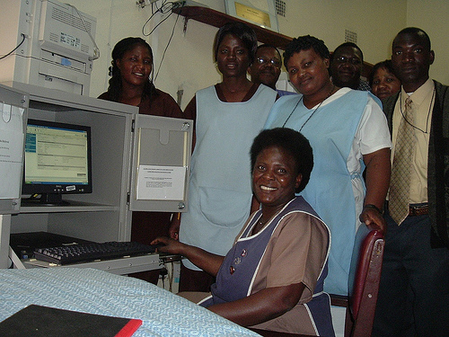
ZEPRS achieves its objectives by providing the following:
- An electronic patient record system with patient record database shared among facilities
- A system that guides clinicians through the Zambian standard of care
- Intelligent rules that alert clinicians to problems and recommend patient referral when appropriate
- Standard & ad hoc reporting for supportive supervision, surveillance, analysis
- An electronic-first system use by clinicians during the course of patient care
- An electronic referral system to improve the efficiency and effectiveness of referrals
RTI has continued working to enhance the ZEPRS software based on feedback from clinicians, and has adapted the software to meet several other needs. Recent enhancements include:
ZEPRS has been developed using open source software and can operate in networked or stand-alone applications. ZEPRS Zcore ™ architecture permits the software to be adapted to other environments and applications. ZEPRS is free and open source software, and is available under a royalty-free license.
More Information
Demos
Software
Documentation
Presentations
Maps
Other
Offline Mode
ZEPRS-specific information about offline mode.
Patient Sync Process (deprecated)
This clinic "server" is configured to publish an xml file, called an
RSS feed, every 30 minutes. The Master ZEPRS server subscribes to this
clinic feed. In the same manner, the clinic pc subscribes to the main
ZEPRS server RSS feed. The RSS feed is a listing of all of the clinic’s
patient records in XML format, with modification dates. When the clinic
pc (or master server) imports an rss feed, it compares each record's
last modified date with its own patient records. If the dates are not
equal, it downloads an XML file that contains the patient record and
updates the necessary data.
Basic record imports
Patient Sync (no longer in-use)
Overview of patient record imports.
- Every 30 minutes the site pc creates a listing of all patients w/
modification dates (called rss.xml), and updates any changed patient
xml files (The xml files is a text file which contains the patient
record in xml format).
- The main ZEPRS server has "subscribed" to the patient listing of
the other pc - the rss.xml file. The import process can happen
automatically - for instance, every 30 minutes - or manually. For
example, when the user presses the "Import" link from the Subscriptions
admin page, ZEPRS reads the remote rss.xml file and compares each
patient listed in it to the lastModified field in each's patient's
record on the main ZEPRS instance's database. If the remote version
lastModified is not equal to the main ZEPRS version, ZEPRS downloads
the remote patient xml file. The automatic process happens the same
way.
- The main ZEPRS instance processes the patient xml files that were
just downloaded. It processes new patients as well as changes to
current patient records. It imports all visits, system generated
outcomes, problems, etc.
- The caching process is automated - the clinic (remote) instance
automatically creates every 30 minutes the data for the main ZEPRS
instance to import, as noted in the first point.
- Each site is publishes an RSS feed for the patients whose records have been modified at the site.
This process may happen in reverse: The clinic may subscribe to the
main ZEPRS feed and fetch records that had been updated for that clinic
while it was offline.
How does the remote site get updates of its patient records if the
record was updated at another site? The remote site feed lists all
patients it is "interested" in – basically, these are all of the
patients it actively manages – in its own RSS feed. The remote site
subscribes to the ZEPRS master site’s feed for that particular remote
site. When the remote site syncs its records, it downloads the site
feed that is generated by the ZEPRS master that currently uses the same
query as the remote site – select all patient records who were last
modified at this remote site. This sync process compares the patient
record modified dates to see if the patient record was modified on - if
they differ, the system syncs the patient record.
Unfortunately, this will miss any patients whose records were
updated at another site – such as transfers to UTH. So, the remote site
keep a list of its patients who were not on the list from the master
RSS feed and sync’s each of the missing patients.
Cleaning and updating remote instances of standalone
Login to standalone server. Stop the zeprs service if it is running:
service zeprs stop
Check again that it is not running:
ps ax|grep java
If it is running, note the process id for the java process and kill it:
kill -9 (process id)
Enter the following commands to make a local connection to the database and clean it out. This will delete all of the records in the database and reset the autoincrement id's.
export DERBY_HOME=/var/www/zeprs_standalone/derby-bin
cd /var/www/zeprs_standalone/databases/scripts
/var/www/zeprs_standalone/derby-bin/ij local_conn_clean_db.sql > out.txt
Once this script has completed, review the file out.txt for any errors.
more out.txt
Indications of success:
ij> DELETE FROM problabor;
2 rows inserted/updated/deleted
or
ij> DELETE FROM anteultrasoundeval;
0 rows inserted/updated/deleted
WARNING 02000: No row was found for FETCH, UPDATE or DELETE; or the result of a query is an empty table.
Indications of failures:
Look for errors that indicate that the script was unable to delete records due to foreign key conflicts.. Make sure that pregnancy and patient tables have successfully deleted their records - this is of the utmost importance.
You may either page though out.txt:
more out.txt
or just check that patient and pregnancy have been cleared out:
more out.txt|grep patient -A1
more out.txt|grep pregnancy -A1
There is also a version of clean_db that makes a network connection to the derby database. This is useful if the server is currently running; however, the author recommends running the script when the app is not running and using the local connection.
You may also check counts for each table to confirm using scripts/table_counts.sql. This script makes a local connection to derby. Modify the connection string at the top of the script if you need to make a network connection.
/var/www/zeprs_standalone/derby-bin/bin/ij table_counts.sql > counts.txt
more counts.txt
Some of the user and site tables will have records. The author assumes you don't wish to delete records from these
tables:
- SITE
- USER_GROUP
- USER_GROUP_MEMBERSHIP
- USER_GROUP_ROLE
- USER_INFO
Once you have confirmed that the derby database is clean, start zeprs
service zeprs start
Go to Form Admin and click "Clean Archive directories."
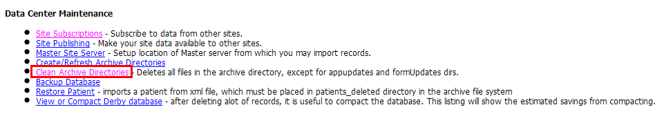
Next you should compact the database:
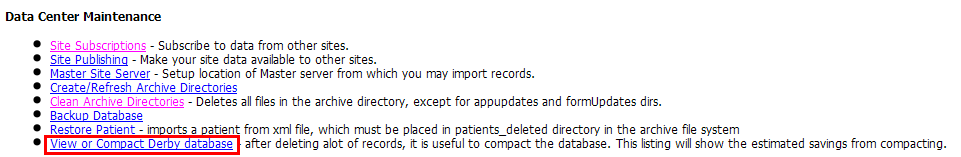
Note the large table sizes on the right side of the screenshot. Click link to Compact the database.
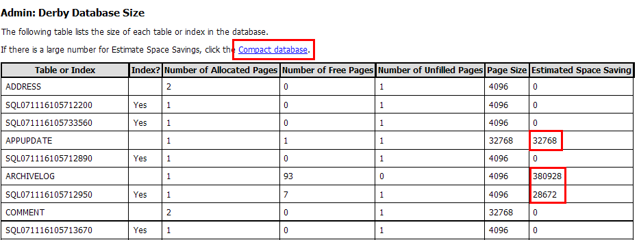
Result of compacting process - note zero-sized tables:
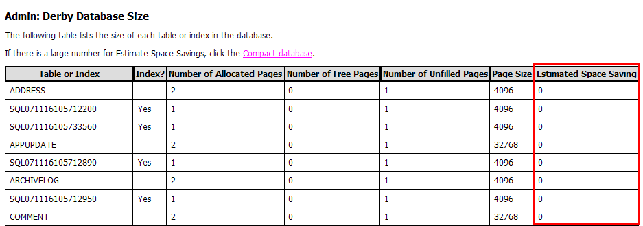
Next, click the link to Backup the database:
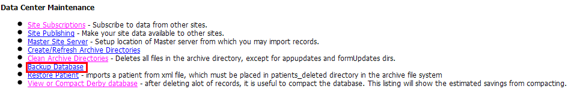
Result of backup operation displays the backup location:
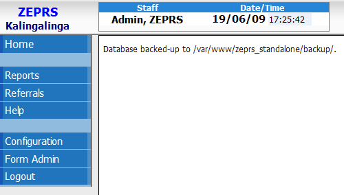
Listing of files in backup directory:
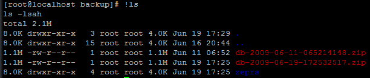
Go to the master app (the ZEPRS server) and copy the url for the RSS feed for the site by going to Admin/Publisher Setup and scroll to the listing of site RSS feeds.
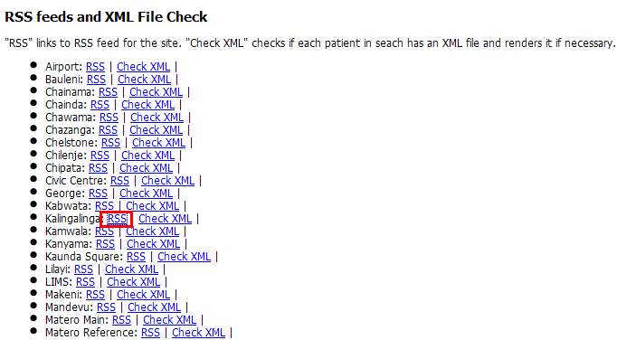
Copy the url of the standalone site's feed.
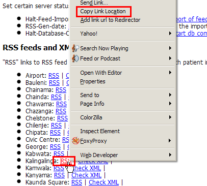
On the standalone app, go to Admin/Subscriptions and paste in the url of the feed:
http://192.168.20.6:8080/archive/KAL/rss.xml
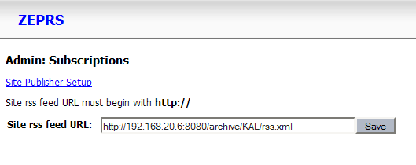
After saving the subscription, click Import:
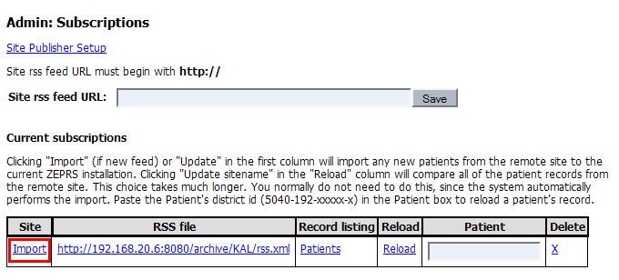
The system then returns a page that shows the "Import" link having changed to an "Update" link. In the background, the system is now importing patient records.
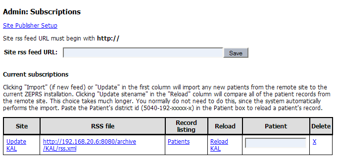
From the console, monitor progress of the import on the standalone
/root/tomtail.sh (a script that has tail -f /path-to-tomcat/logs/catalina.out)
Comparing remote instances with the master
During development one may confirm the accuracy of the sync process. From the master, go to Admin/Publishing and click the "Compare" link on the record for the remote site to which the master is subscribed:
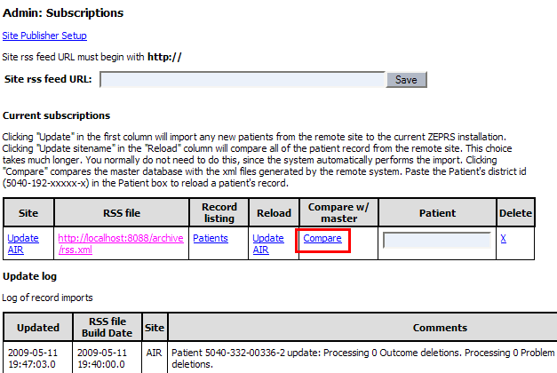
The system requests an XML record for each patient in the Master database for that site. This record is rendered dynamically on the remote site. Using the XML record is in-lieu of connecting to the remote database directly. Elements of the patient record on the master such as all encounter recordsd are compared with the remote version. The system displays a report to the user when the analysis is complete:
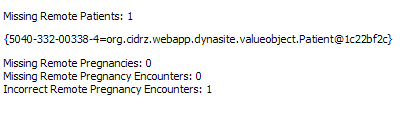
The system also generates a report on the filesystem in the "syncReports" directory for the site - in this case, in webapp/archive/AIR/syncReport. It provides more detail on missing or incomplete records.The UUID of the missing patient or encounter is displays. Incorrect values and UUID for the encounter are also provided.
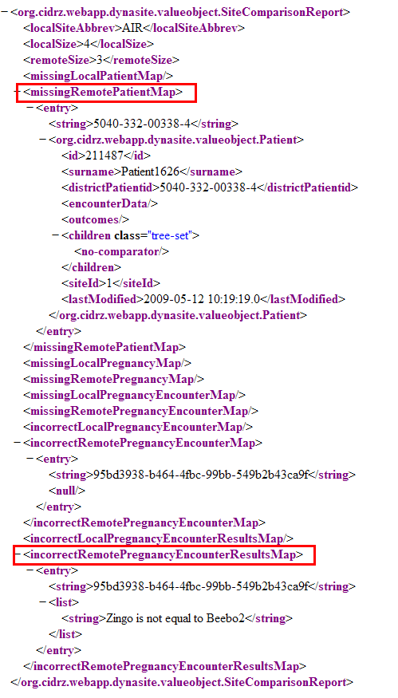
Patient Home clinic
Patient Sync (deprecated)
This is ZEPRS-specific information.
When a patient is registered in the system, site_id is set in the
patient table. This never changes unless explicitly changed in
demographics. The site_id is usually the site id of the site that the
pc is configured for in "Setup."
Someone from another site may edit a patient record. This is useful
when the patient moves to another clinic, the patient is referred to
UTH, or when someone makes a correction to a patient record from
another site. The site_id field in another table - patient_status,
which holds data that often changes for the patient - is changed. If
the user is adding a new encounter, the created_site_id and site_id is
set in yet another table - encounter - and patient_status.site_id is
updated. If the user is editing a record, encounter.site_id and
patient_status.site_id is updated.
For the caching to work optimally, a patient must "belong" to a
single clinic. When a site is "offline," the expectation from the
system will be that a patient record will be updated in only two places:
- the patient's "home" clinic - the clinic the patient belongs to
- UTH, in case the patient was referred to another clinic while the site is offline.
RSS File Elements
RSS.class generates an XML file that lists all of the patients managed by the clinic or site. This file uses the RSS 2.0 schema.
Elements:
- <title>ZEP</title> - site abbreviation
- <link>http://192.168.20.6:8080/archive/rss.xml</link> - link to rss file for this site
- <description>ZEP Patients</description>
- <lastBuildDate>Mon, 17 Apr 2006 16:30:01 GMT</lastBuildDate> - Timestamp that this listing was generated
Each patient record is nested in an <item> tag and has the following elements:
- <title>5040-100-00001-1.xml</title> - ZEPRS ID
- <link>http://192.168.0.11:8080/archive/ZEP/5040-100-00001-1.xml</link> - URL of patient XML record
- <author>2</author> - site id where record was last modified.
- <pubDate>Mon, 21 Nov 2005 09:10:10 GMT</pubDate> - Timestamp of when this record was last modified
- <guid>http://192.168.0.11:8080/archive/ZEP/5040-100-00001-1.xml</guid>
Subscriptions
Patient Sync (no longer in-use)
The Publisher page has a list of all site's rss feeds. Right-click on the feed's RSS url and copy. Paste this url in the subscription page to subscribe to the remote site's feed.

This concept is very similar to how you subscribe to a news feed or a blog on my.yahoo.com or other newsreader services. In fact, I'm using a library called Rome that is designed for this purpose. The feed and patient xml files are password protected. The log provides details of each update.
Update data is saved in the updatelog table.
You may also monitor updates via the command line:
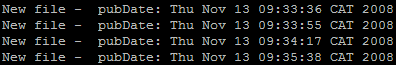
To do
List of items to make this system seamless:
- Enforce offline mode. If a clinician from an offline clinic
attempts to modify a patient record on the main ZEPRS server, ZEPRS
will re-direct user to clinic version. This will not prevent users from UTH from making modifications to the patient record.
- Make main ZEPRS server aware when a server is "offline".
- Create Administrative interface to list all clinics and their offline status:
- Clinic id
- Timestamp when placed offline
- When a clinic is placed offline, offer to subscribe to that
clinic’s feed if it’s not already subscribed. When clinic is back
online, offer to import the feed.
- When a new build is released, go to Admin/Subscriptions and click
"Propogate Updates" link. ZEPRS will loop through the list of
Subscriptions and enable each subscribed site to initiate
downloads/installation of updates. Part of this is already in-place.
Updating a current patient record
Patient Sync (no longer in-use)
Updates to patient records are fetched via RSS.importFeed.
Start w/ the patient object and compare the non-Collections items (strings and ints). Then check the following collection items:
- patientStatusreport
- sessionPatient
- pregnancyList
- Loop through encounters. Check if the uuid for each encounter is in the database; if not, add the new encounter.
- patientRegistration - refers to instance in pregnancyList, so it will already be handled.
- Deletions are handled the same way. ProblemArchive,
OutcomeArchive,and EncounterDataArchive have uuid's of the objects they
are deleting.
- Problems and system generated outcomes work the same way - loop
through those objects, check if the uuid is in the database, add new
objects.
Any changes to encounters are handled by looping through the EncounterValueArchive list.
Sample code for processing objects using uuid's.
Oflfine mode notes
List of notes:
- PatientRecordUtils.importEncounter - must set encounter_id for referring encounter.
File locations:
- Store all locally-generated files - files that represent the current db values - in sitename/local
- Store all imported files in sitename/import. If it's subscribed to the main zeprs feed, store in ZEP/import.
- At the end of an import, store latest version of patient record in
local db at sitename/local by using PatientRecordUtils.archivePatient.
This uses XmlUtils.generatePatientXML to render the patient record from the database.
- Before this step one could save the current file in sitename/local as a backup.
When a new build is released, the system performs any necessary Application updates. See the page on Updating the Application for more information.
Populate master_archive on each remote instance.
Each standalone instance usually processes clients for the site
or clinic in which they operate. In some circumstances, you may wish to
have records from all patients in the system - from all sites -
available, even if the site is offline. These commands are used to
populate master_archive on each server. This archive is used for the
import patient process. There is also an automated process that updates
this archive daily.
command on server to create archive
tar -czvf archive.tar.gz archive
script for transferring
archive to standalone from master server. The lines marked w/ "//"
(sftp and login) are pseudocode - you'll need to perform those
operations yourself.
// open sftp session
cd /var/www/zeprs_standalone/webapps
put archive.tar.gz
exit
// login to standalone
cd /var/www/zeprs_standalone/webapps
mkdir master_temp
mv archive.tar.gz master_temp
cd master_temp
tar -xzvf archive.tar.gz
mv archive master_archive
rm -rf /var/www/zeprs_standalone/webapps/master_archive
mv master_archive ../
cd ..
rm -rf master_temp
Software Updates
Update the following items when releasing a new build:
- zeprs_install.sql
- admin_install.sql
- zeprs.war
- deleteGen.sql
Updates are placed on /var/www/html/sw/updates/ on the ZEPRS server.
Steps to add a new offline mode site
You will need to change the home page on all of the other pc's
at Matero ref to point to the new pc instead of the live ZEPRS site. My
main advice for implementing this new site: don't let any new patients
be created on the main ZEPRS server once you've begun changing over the
local pc's. If a new patient is created on the master ZEPRS pc by a
user at the new site who is not using the new local server, and then a
new patient is created on the new local server, both users will
probably have the same id, and the local version will not sync to the
master server due to a duplicate id problem.
Steps:
1. All local users at the new site need to stop using ZEPRS until you complete the changeover.
2. Update the local site w/ the zeprs feed: login as zepadmin to the
new site server, Go to Admin ->Site subscriptions -> Click
"Update ZEP".
3. Change the home page to point to this new site
4. Local users at the new site may resume work using the local site.
Sync process - example code comparing uuid's
The following code is for the Patient Sync method of synchronization, which is no longer in-use.
Loop through the current records and add them to a
Hashmap<uuid,createdDate). This pattern is used for all objects in
zeprs - encounters, problems, comments, etc.
Map currentCommentMap = new HashMap(); // create a hashmap that stores the uuid
if (currentComments != null) {
// loop through the current items and pop them into Map
for (Comment item : currentComments) {
String uuid = item.getUuid();
currentCommentMap.put(uuid, uuid);
}
}
Then loop through the records you're importing and see if the uuid exists.
If not, set some import id's and (in some cases) the patient and pregnancy id and save the new record.
for (int i = 0; i < importComments.size(); i++) {
Comment item = (Comment) importComments.get(i);
item.setImportCommentId(item.getId());
String uuid = item.getUuid();
if (currentCommentMap.get(uuid) == null) {
XmlUtils.saveImportedComment(item, conn, comments);
}
}
Clear the map afterwards:
currentCommentMap.clear();
Software Development
Pages describing software development for ZEPRS.
Example software development configuration
Updated July 30, 2012
Software Setup
Here are some notes to help a developer get running with ZEPRS. Use the versions of the software (jdk, mysql) in the notes.
Install jdk 6, not jdk 7
Instal Mysql: 5.1.60 community edition. Add the following to the bottom of my.ini:
# zeprs
old_passwords=1
If you are using a newer version of mysql and do not have my.ini, check "old_passwords" in the configurator app.
Please note that if you don't have old_passwords set, authentication will not work.
Install ApacheTomcat 6.0.20.
Source Code
Source control can be integrated with the Eclipse IDE using Subversive. The
Subversive installation instructions are a useful guide to installing Subversive. Once it is installed and you restart Eclipse, go to File -> Import -> SVN and choose Project from SVN. Create a new repository using the URL http://www.ictedge.org/repos/zeprs/trunk/. Subversive will ask if you want to normalize the URL by truncating /trunk; don't do it.
If you are using a command-line subversion client, checkout the ZEPRS source code using the following comand:
svn checkout http://www.ictedge.org/repos/zeprs/trunk zeprs-readonly
Copy the folowing files from C:\source\zcore-workspace\workspace\zeprs\lib\ to C:\Program Files\Apache Software Foundation\Tomcat 6.0\lib
commons-dbcp-1.2.1.jar
commons-logging-1.1.jar
commons-pool-1.3.jar
log4j-1.2.13.jar
log4j.properties
- zcore-tomcat-realm.jar (Do not use tomcat-realm-zeprs.jar; it is obsolete.)
- mysql-connector-java-5.0.7-bin - Do not use mysql-connector-java-5.1.19-bin - this will cause problems with the population of lists.
Create the Databases
Using the mysql command, create the zeprs, zeprsdemo, admin, mail, and userdata databases.
Run the following sql scripts using the format mysql -u root db<file.sql
- conf/template/sql/zeprs-data-05032012.sql - create the zeprs db - mysql -u root zeprs<zeprs-data-05032012.sql
- conf/template/sql/zeprsdemo-data-05032012.sql - create the zeprsdemo db - mysql -u root zeprsdemo<zeprsdemo-data-05032012.sq
- conf/template/sql/admin_install.sql - create the admin db - mysql -u root admin<admin_install.sql
- conf/template/sql/mail_install.sql - create the mail db - mysql -u root mail<mail_install.sql
- conf/template/sql/userdata_install.sql - create the userdata db - mysql -u root userdata<userdata_install.sql
To configure the sql permissions, open conf/template/sql/web_user.sql and view the sql for the zeprs_web_user, root users. Lines 8 - 23 lines should suffice. You will need to replace "password" with the password for zeprs_web_user in META-INF/context.xml.
Eclipse Project Configuration
In Eclipse, go to Build Path -> Configure Build Path and point to your JDK's tools.jar.
Also confirm that the Server Runtime (Tomcat) points to a valid runtime. (Add Library -> Server Runtime.)
Add servlet-api.jar from your tomcat/libs directory.
Confirm that your server runtime is in eclipse preferences -> Server -> runtime environments
In the Servers view, add zeprs to the Tomcat 6 server. Also check in the projects properties Targgeted runtimes that it is pointed to this server.
Double-click on the server in Servers view. In the Server Locations section, Use tomcat installation and change the deploy path name to webapps.
It helps to increase the server timeouts to 90 seconds.
In Launch configuration arguments tab, put the following at the beginning of the VM arguments:
-Xms256m -Xmx1g -XX:MaxPermSize=256m
Copy local-example.properties to local.properties and configure the settings if you do anything in ant with build.xml.
Use Firefox to test the ZEPRS app; there is a bit of CSS work that must be done to get it to work in Chrome. See the
ZCORE ON TOMCAT 7 AND WINDOWS 7/64 BIT notes if you would like to upgrade ZEPRS to Tomcat 7 and/or Chrome.
Point your browser to localhost:8088/zeprs/
Troubleshooting
Lib path issues
When you start up the app, of you get the following error if zeprs-realm.jar is not in your tomcat/libs dir:
java.lang.ClassNotFoundException: org.apache.catalina.realm.UserGroupRoleRealm
If you get the error when you login:
SEVERE: com.mysql.jdbc.exceptions.jdbc4.MySQLSyntaxErrorException: SELECT command denied to user 'zeprs_web_user'@'localhost' for table 'accountuser'
revisit web_user.sql and run the credentials for that user.
Diagnosing Authentication Issues
Import the project into Eclipse. Right-click on the project name and select Build Path -> Configure Build Path. Confirm that the paths to the Libraries are correct.
In src/test, open ZcoreUserGroupRoleRealmTest. Right click on authenticate_shouldReturnAPrincipal and choose debug configuration. The following should be in the Classpath:
- tomcat-juli (in your Tomcat/bin folder)
- mysql-connect-java-5.0.5.jar (in your Tomcat/lib folder)
- commons-logging (in your Tomcat/lib folder)
- log4j.jar (in your Tomcat/lib folder)
Open ZcoreUserGroupRoleRealmTest. Enter the mysql login in the "String username" and String password" fields. Enter the username/password for the ZEPRS login you wish to test in the line "Principal principal = realm.authenticate... Hit the debug button and it should pass - check the Junit tab to confirm it is green. If the test fails, confirm that the settings in META-INF/context.xml are the same as the test config. Check the line in context.xml that starts with Realm className. Older version of this file user the name connectionName for username; change it to username:
Realm className="org.rti.tools.tomcat.ZcoreUserGroupRoleRealm"username="zeprs_web_user"
To step through the actual code for ZcoreUserGroupRoleRealm, right-click on the zeprs project properties and choose Build Properties -> configure build properties. In the Libraries tab open Apache Tomcat 6 library, and then open the zeprs-tomcat-realm.jar library (toggle the triangle widget). Click source attachment and edit. Browse to the location of the source code for the ZcoreUserGroupRoleRealm source code - will probably be /ZcoreUserGroupRoleRealm/src. Restart the app and try to login. If it fails, open src/ZcoreUserGroupRoleRealm and place a breakpoint "return this.username;"in the getUsername() method. Restart the app and see if it gets populated the next time you try to login.
-------------------
The following pages describe a few more details on the setup for ZEPRS development.
Install apache HTTPD (optional)
Apache HTTPD is not required for ZEPRS to work; however, it is
common to run httpd in front of apache using mod_jk or mod_proxy.
Apache httpd install
- Select defaults for domain. Make sure it selects for All Users, port 80
- Choose Custom install
- When it installs, it may throw up and error about port 80 being
used. It is probably an IM app like yahoo or MSN. Also, check if "World
Wide Web Publishing" and IIS Admin services are running. Make them
Manual and stop them in Control panel.


{kind=link}
{kind=link}
{kind=link}
{kind=link}
{kind=link}
{kind=link}
{kind=link}
{kind=link}
{kind=link}
{kind=link}
{kind=link}
{kind=link}
{kind=link}
{kind=link}
{kind=link}
{kind=link}
{kind=link}
{kind=link}
{kind=link}
{kind=link}